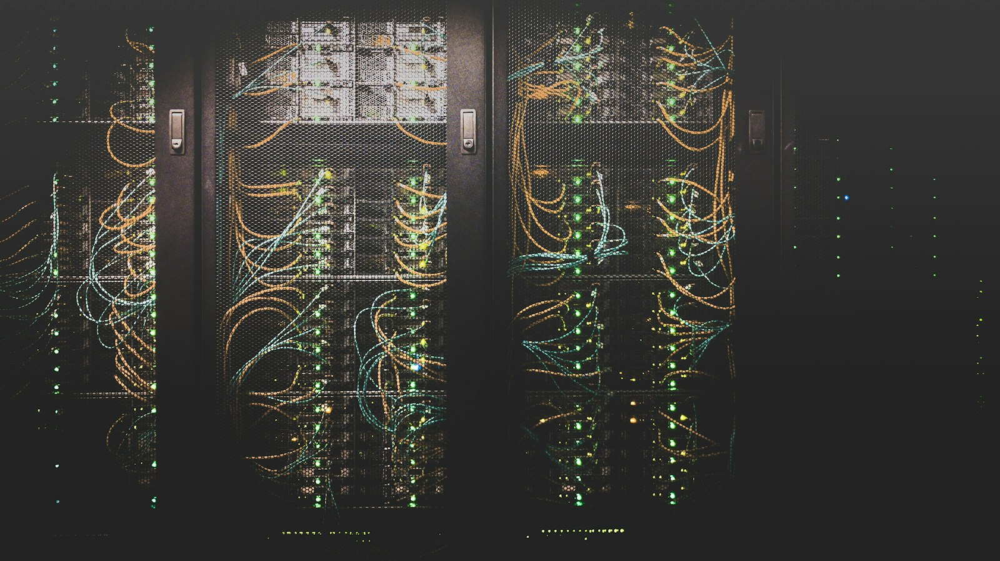
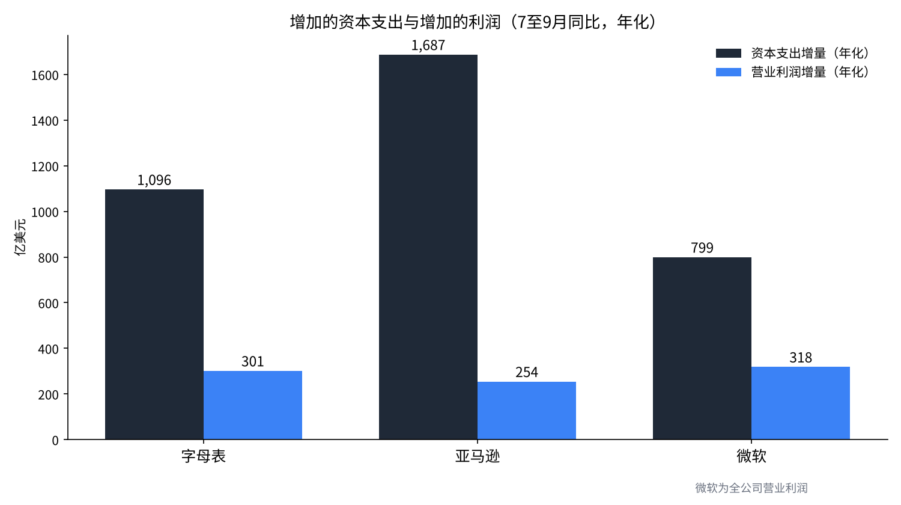
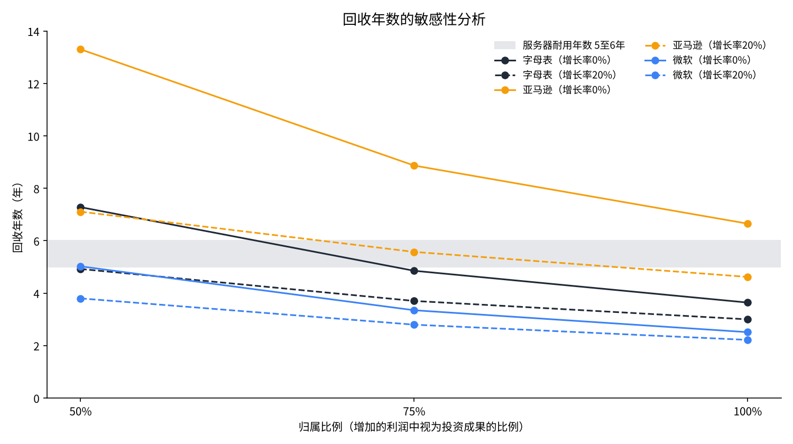

AI资本支出需要几年才能收回？——用字母表、亚马逊、微软7至9月的数据测算
2026年10月28日至29日（美国时间），美国三家大公司公布了7至9月的业绩。三家公司这一季度的资本支出合计约1,680亿美元，约为一年前的2.1倍。
本文只提出一个问题：与一年前相比增加的资本支出，用与一年前相比增加的营业利润，需要几年才能收回？
我在日本，利用三家公司的财报资料、会计政策的披露以及国际能源署（IEA）的报告，并通过变动利润归属和增长率的敏感性分析来检验。

问题与背景
资本支出，是指为购买土地、建筑、服务器等多年使用的资产而发生的支出。会计上不会一次性计为费用，而是按使用年数（耐用年数）分摊，作为折旧计入每年的费用。回收期，是指用投资产生的利润收回投资金额所需的年数。
字母表7至9月的资本支出为513.6亿美元，是上年同期239.5亿美元的两倍多。经营现金流减去资本支出后的自由现金流，本季度为−90.7亿美元[1]。亚马逊的资本支出为772.6亿美元，最近12个月的自由现金流为−423.6亿美元。该公司预计2026年资本支出约为2,200亿美元，并说明增加的主要原因是对AI的投资[2]。
微软购置不动产和设备的支出为393.7亿美元，约为上年同期193.9亿美元的两倍。云平台Azure的营收增长了48%[3]。市场反应出现分化，字母表在财报公布次日的29日下跌12.64%，微软盘后上涨超过4%[7]。亚马逊盘后下跌超过5%[8]。
思考回收年数时，耐用年数不可或缺。亚马逊从2025年1月起，把部分服务器和网络设备的耐用年数从6年缩短为5年。理由是以AI和机器学习为中心的技术进步很快[4]。用于AI计算的机器，是按5至6年更换的前提计入费用的。

数据与方法
使用的数字，是三家公司财报资料中7至9月和上年同期的两组数字[1][2][3]。资本支出使用各公司现金流量表中的“购置不动产和设备”。利润方面，字母表使用Google Cloud，亚马逊使用AWS的部门营业利润。
微软从2027财年起重新划分部门，没有单独列出云业务的营业利润。因此使用全公司的营业利润。全公司的利润也包含云以外的增长，所以微软的回收年数会偏短。解读结果时，这一点作为前提保留。
计算方法如下。
年化的资本支出增量 ΔC＝（本季度资本支出−上年同期资本支出）×4
年化的利润增量 ΔP＝（本季度营业利润−上年同期营业利润）×4×归属比例s
回收年数，是假设第1年利润为ΔP、第2年为ΔP×（1＋g）这样增长时，利润合计达到ΔC所需的年数。不足一年的部分按比例计算。归属比例s，是增加的利润中由增加的资本支出带来的比例，g是增加的利润的年增长率。基准设为s＝100%、g＝0%，此时回收年数等于ΔC÷ΔP。不考虑税收。
结果
| 公司 | 资本支出（上年→本期） | 部门营业利润（上年→本期） | ΔC（年化） | ΔP（年化） | 回收年数（基准） |
|---|---|---|---|---|---|
| 字母表 | 239.5→513.6亿美元 | 35.9→111.2亿美元（Google Cloud） | 1,096亿美元 | 301亿美元 | 3.6年 |
| 亚马逊 | 351.0→772.6亿美元 | 114.3→177.7亿美元（AWS） | 1,687亿美元 | 254亿美元 | 6.7年 |
| 微软 | 193.9→393.7亿美元 | 379.6→459.2亿美元（全公司） | 799亿美元 | 318亿美元 | 2.5年 |
在基准前提下，字母表3.6年、亚马逊6.6年、微软2.5年即可收回。只有亚马逊超过了服务器5至6年的耐用年数。这是因为它的资本支出增加最多，而AWS利润的增长没有跟上。

字母表的Google Cloud营业利润一年内增至约3.1倍。营收也从151.6亿美元增至307.1亿美元，增长超过一倍[1]。利润的增速接近资本支出的增速，体现为3.6年这一较短的回收期。
敏感性分析
基准前提把增加的利润全部视为增加的资本支出的成果，并假设利润不再增长。因此，把归属比例s变动为100%、75%、50%，把增长率g变动为0%、20%、40%。
| 归属比例s | 增长率g | 字母表 | 亚马逊 | 微软 |
|---|---|---|---|---|
| 100% | 0% | 3.6年 | 6.7年 | 2.5年 |
| 100% | 20% | 3.0年 | 4.6年 | 2.2年 |
| 100% | 40% | 2.6年 | 3.8年 | 2.1年 |
| 75% | 0% | 4.9年 | 8.9年 | 3.3年 |
| 75% | 20% | 3.7年 | 5.6年 | 2.8年 |
| 75% | 40% | 3.2年 | 4.5年 | 2.5年 |
| 50% | 0% | 7.3年 | 13.3年 | 5.0年 |
| 50% | 20% | 4.9年 | 7.1年 | 3.8年 |
| 50% | 40% | 4.0年 | 5.4年 | 3.2年 |

微软在全部9种情形下都在5年以内。字母表超过6年的，仅有归属比例50%且利润不增长时的7.3年。亚马逊在归属比例50%且没有增长时需要13.3年。即使归属比例为75%，增长率20%时为5.6年，40%时为4.5年，这才降到5年以下。
亚马逊能否收回，取决于AWS的利润今后能否以每年2至4成的速度持续增长。对字母表和微软来说，即使利润增长停止，只要增加的利润大部分是投资的成果，就能在耐用年数内收回。
讨论
相反的看法有两种。第一种认为，这一测算把回收期估得太长。资本支出中也包含土地、建筑这类使用15至25年的资产。据报道，微软从2027财年起把数据中心建筑的耐用年数从15年延长到25年[6]。刚建成的设施还没有产生利润，利润还在后面。据报道，字母表云业务的未交付订单在6月底为5,139亿美元[9]。
第二种则认为，反而估得太短。增加的利润中，也包含与AI无关的需求增长。而且，本季度大额资本支出的折旧还没有充分计入费用。字母表的折旧从56.1亿美元增至83.7亿美元，增长49%，而资本支出增长了114%[1]。这一差距会对今后的营业利润形成下压。
还有电力的约束。IEA认为，全球数据中心的耗电量到2030年将增至约945太瓦时，几乎翻倍[5]。即使买了服务器，没有让它运转的电力和场所，也不会产生利润。电力的安排一旦滞后，回收也会相应推迟。
数据的局限也很大。部门营业利润并非AI单独的利润。微软用全公司的利润替代。把季度乘以4得到的年化数字，包含季节性波动。据报道，微软表示将把数据中心租赁从计入资本支出的融资租赁，转为不计入的经营租赁，因此公布的资本支出金额本身可能偏小[6]。
检验的标准，是今后2至4个季度的数字。对亚马逊，看AWS营业利润同比增量除以资本支出同比增量的比率。本季度约为0.15，超过0.2的话，基准回收年数就会低于5年。对字母表，如果折旧的增速开始超过Google Cloud利润的增速，我会重新审视结论。
结论
用7至9月的数字测算，增加的资本支出的回收年数为字母表3.6年、亚马逊6.6年、微软2.5年。微软使用了全公司的利润，数字偏宽松。字母表和微软即使把前提定得更严，多数情形也在服务器的耐用年数之内。对亚马逊来说，AWS利润每年持续增长2成以上，是收回的条件。
29日的股价与这个排序并不一致。回收年数较短的字母表下跌了12.64%。市场关注的，或许是自由现金流转为负值，而不是回收年数的长短。
我是这样看的
我持有字母表350股。12%下跌后的第二天早上，我没有卖出，也没有加仓。因为这周我已经决定看了财报也不加仓。账户里的现金只有0.76%，我认为现在是攒现金余力的时间。亚马逊我没有持有。我觉得它是好公司，但我把它看作使用AI的一方，而非制造AI的一方。
半导体公司我也没有持有。我认为芯片已经过剩，让芯片运转的是电力。所以在外国股票中，我把SpaceX看作能连同电力和场所一起提供的一方，持有1,250股。如果正如IEA的展望那样电力不足，决定回收速度的，或许不是买了多少，而是能让多少运转起来。
出处
- Alphabet Inc.，“Alphabet Announces Third Quarter 2026 Results”，2026年10月28日 https://s206.q4cdn.com/479360582/files/doc_financials/2026/q3/2026q3-alphabet-earnings-release.pdf
- Amazon.com, Inc.，“Amazon.com Announces Third Quarter Results”，2026年10月29日 https://s2.q4cdn.com/299287126/files/doc_earnings/2026/q3/earnings-result/AMZN-Q3-2026-Earnings-Release.pdf
- Microsoft Corporation，“FY27 Q1 Earnings Release”，2026年10月29日 https://www.microsoft.com/en-us/investor/earnings/fy-2027-q1/press-release-webcast
- Amazon.com, Inc.，“Form 10-K（截至2024年12月31日的财年）”，2025年2月 https://www.sec.gov/Archives/edgar/data/1018724/000101872425000004/
- 国际能源署（IEA），“Energy and AI”，2025年4月 https://www.iea.org/reports/energy-and-ai
- PYMNTS，“Microsoft Extends Data Center Lifespans to Soften AI Buildout Costs”，2026年7月（报道） https://www.pymnts.com/?p=4019068
- 雅虎日本新闻，美股相关报道，2026年10月30日（报道） https://news.yahoo.co.jp/articles/e0440f2ac7956725edd40eee8a0dfa80a45af726
- OANDA证券，纽约股市摘要（29日），2026年10月30日（报道） https://www.oanda.jp/lab-education/market_news/mn_1041435_202610300813/
- Tickzen，“Alphabet Q3 2026 earnings preview”，2026年10月24日（报道） https://tickzen.app/insights/alphabet-goog-q3-2026-earnings
照片：İsmail Enes Ayhan、Taylor Vick（Unsplash）。图表由YUKI CAPITAL制作
每天的数字和判断，我都记录在X上。